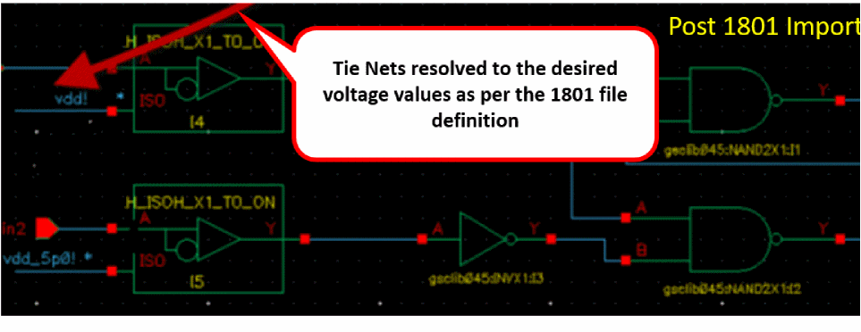
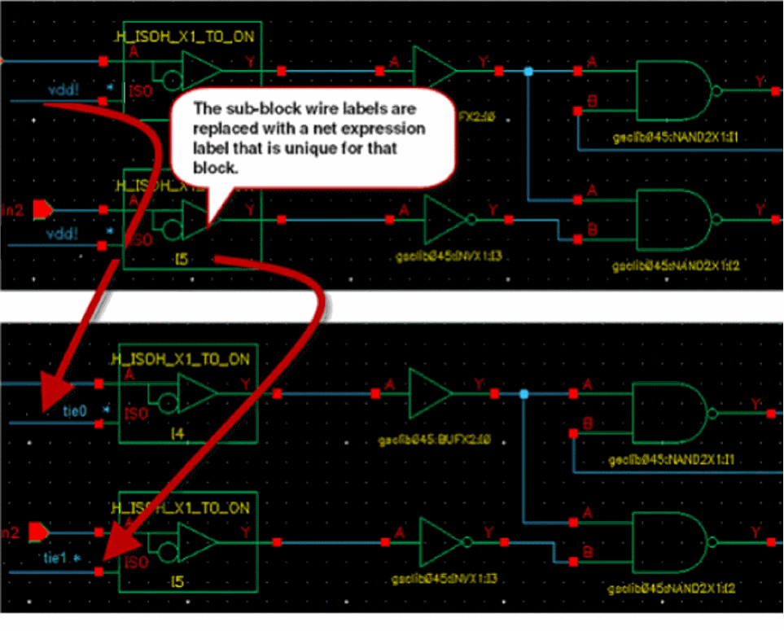

Tie Connection Resolution
In a Verilog netlist if an input pin of a standard cell instance or a special low power cell, such as level shifter or isolation cell instance, is connected to a numerical constant 1'b1 or 1'b0, the input pin gets connected to a global supply net in the schematic created after Verilog import using Verilog In. The name of the global supply net is specified at the time of Verilog import. After Verilog import, all such input pins connect through a common wire creating tie connections. The label of the common wire matches the global supply net name.
To avoid shorting of nets after importing the 1801 file, it is important that all such pins are connected to wire stubs with a label. However, the wire stubs are not physically connected to each other. To achieve this, use the two connect by name options, Connect Power Net By Name and Connect Ground Net By Name, during Verilog import. This connects each tied-off input pin with the wire stub that has a label. It enables you to modify the tied-off input pin connections without creating incorrect connectivity in the design through shorting of the nets during the 1801 import. Use create Net Expression as per the design requirement.
To resolve the tie connections of various instances, all the labels that require an update are identified during import. The labels on the wire stubs that are attached to the tied-off input pins are updated. These labels present at the top level or in the lower level block are identified for updates based on the following conditions:
- The label is attached to a wire, which has one end point floating (not connected to anything) and the other end point connected to an instance.
- The wire net name is registered as a power or ground in a setup.
-
Wire nets must have a netType property associated. The power nets must have the netType property as
supply1. The ground nets must have the netType property assupply0.
Wire net having the netType property is one of the conditions because it ensures that the label and wire have been added using Verilog In.
It avoids modification of labels in standard cells, for example, an inverter schematic can have terminal MOS devices with bulk/source/drain terminals connected to wire stubs that have a label, and the wire nets are registered as power or ground in the setup.
Once the target wire label is identified, the 1801 import flow processes these nets to create unique inherited tie nets for each occurrence of such nets in the entire design hierarchy, for example, tie0! or tie1!. This prevents shorting of nets during the import flow. The tie net expression is further resolved based on whether it is a top-level net or a sub-block net.
-
For tie net at the top level, the instance pin to which it is connected is identified along with the related power and ground net of the connected instance pin. The wire labels are updated according to the 1801 file definition.
 -
For a tie net in a sub-block, the instance pin to which it is connected is identified along with the related power and ground net of the connected instance pin. The tie net expression is resolved to its final power or ground value based on a netSet property.

The final resolution of the tie connections in schematic designs to the appropriate power and ground nets mentioned in the 1801 file is aligned to the following rules:
- For standard cell instances, the tie connection at the input pin is resolved with the power/ground net of the power domain of the instance.
- For isolation instances, the data pin with tie connection is resolved with the power/ground net of the power domain in which the isolation cell is located.
-
For isolation instances, the enable pin with tie connection at the input pin is resolved with the power or ground net of the always-on power domain of an isolation instance. This depends on the
–isolation_supply_setordefault_isolationarguments according to location or domain. -
For level shifter instances, the data pin with tie connection is resolved with the power/ground net of the
input_supply_setargument. -
For enabled level shifter instances, the enable pin with tie connection is resolved with the power or ground net of the output power domain of the enabled level-shifter instance. If the
output_supply_setargument is not available, the supply set of the receiving logic is considered. - For isolation and level shifter combo cell instances, the enable pin with tie connection is resolved with the power/ground net of the input power domain of the enabled level shifter instance.
Related Topics
Redirected netSet Property Creation and Optimization
Handling of Low Power Special Cells
Support of Hierarchical 1801 for Import Flow
Removing Imported Power Intent
Return to top